MORSEL / FOOD STUDIES / V1 DIRECTION
A small pantry, in ink & wash
Original food illustrations for the field journal. Generic illustrations—not meal photos, portion sizes or nutrition evidence. Artwork awaits Guy’s review.
17 STUDIES · 13 FOODS / 4 FALLBACKS · NIGHT
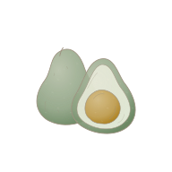
Avocado
avocado
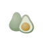
64 / 40 pxEditable SVG · PNG
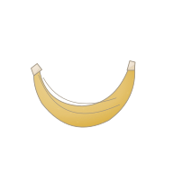
Banana
banana
64 / 40 px
produce · foodEditable SVG · PNG
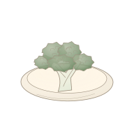
Broccoli
broccoli
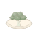
64 / 40 pxEditable SVG · PNG
Coffee
coffee
 64 / 40 px
64 / 40 pxEditable SVG · PNG
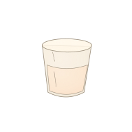
Drink · fallback
fallback-drinks
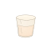
64 / 40 pxEditable SVG · PNG
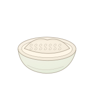
Grains · fallback
fallback-grains
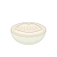
64 / 40 pxEditable SVG · PNG
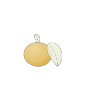
Produce · fallback
fallback-produce
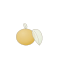
64 / 40 pxEditable SVG · PNG
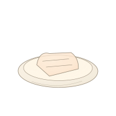
Protein · fallback
fallback-protein
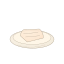
64 / 40 pxEditable SVG · PNG
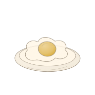
Fried egg
fried-egg
64 / 40 px
protein · foodEditable SVG · PNG
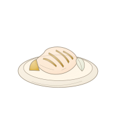
Grilled chicken
grilled-chicken
 64 / 40 px
64 / 40 pxEditable SVG · PNG
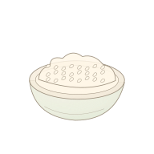
Jasmine rice
jasmine-rice
 64 / 40 px
64 / 40 pxEditable SVG · PNG
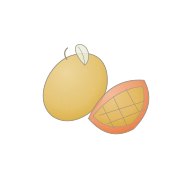
Mango
mango
 64 / 40 px
64 / 40 pxEditable SVG · PNG
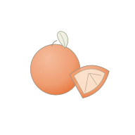
Orange
orange
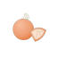
64 / 40 pxEditable SVG · PNG
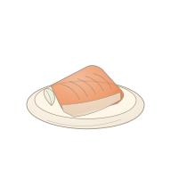
Salmon fillet
salmon
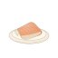
64 / 40 pxEditable SVG · PNG
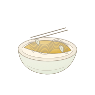
Stir-fried noodles
stir-fried-noodles
 64 / 40 px
64 / 40 pxEditable SVG · PNG
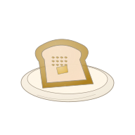
Toast
toast
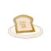
64 / 40 pxEditable SVG · PNG
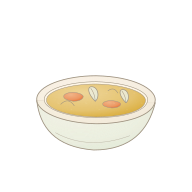
Clear vegetable soup
vegetable-soup
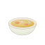
64 / 40 pxEditable SVG · PNG
PROTOTYPE — awaiting Guy approval. No app integration.